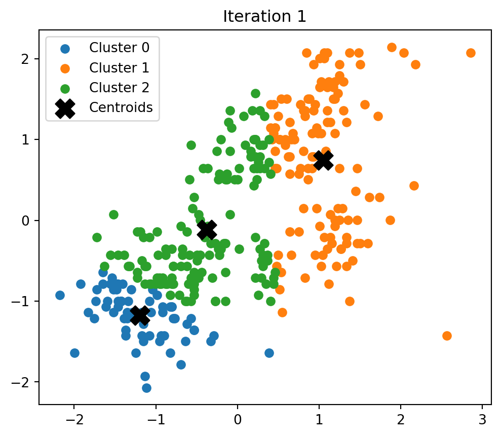
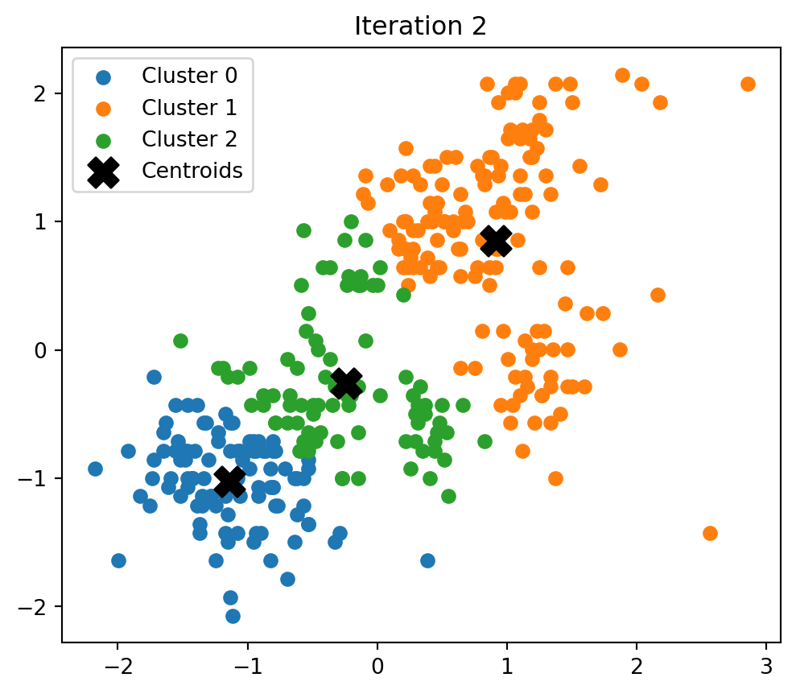
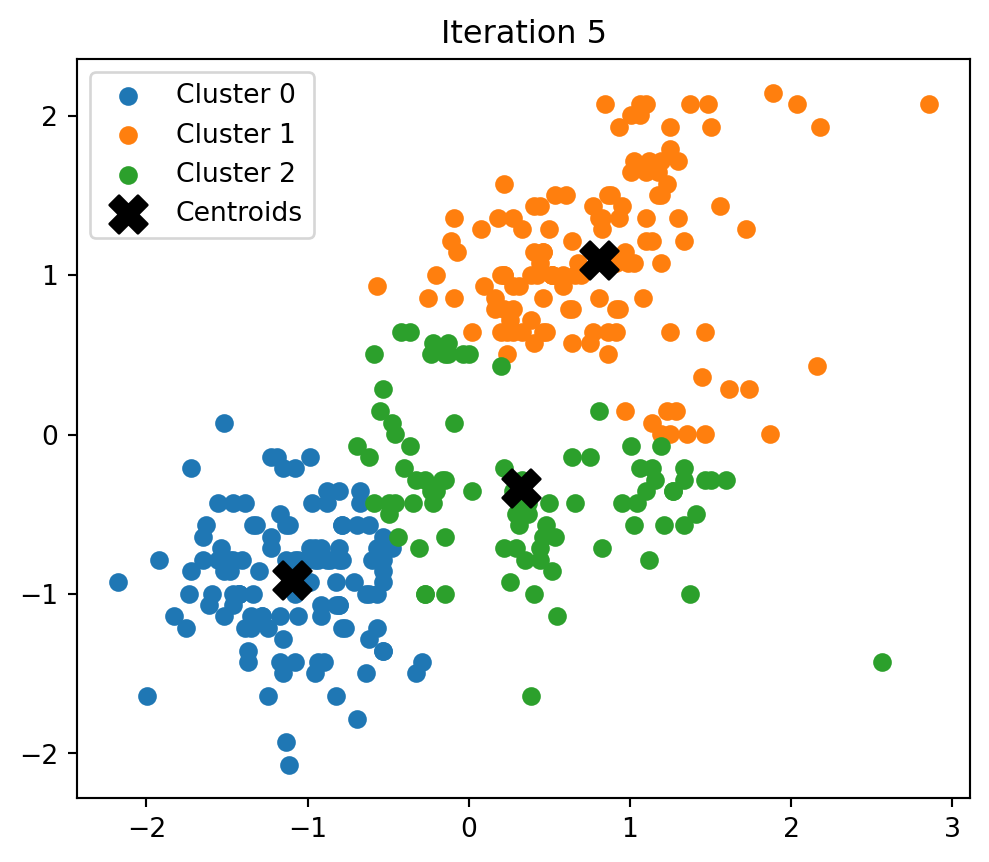
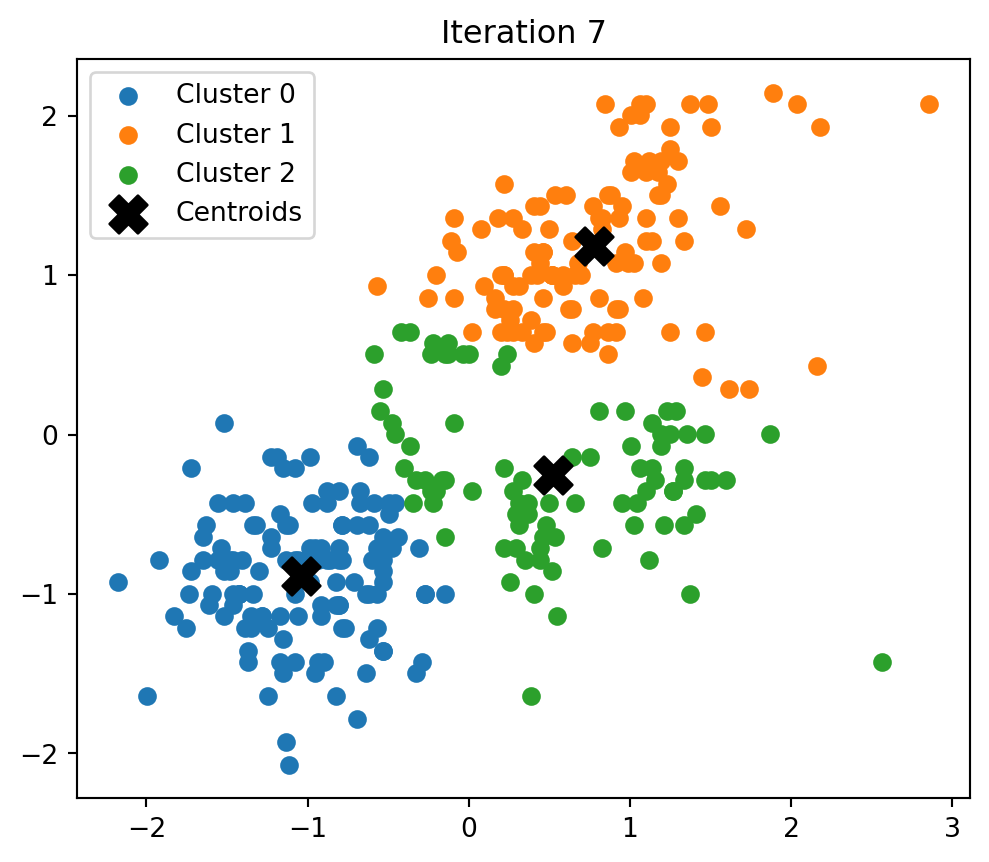
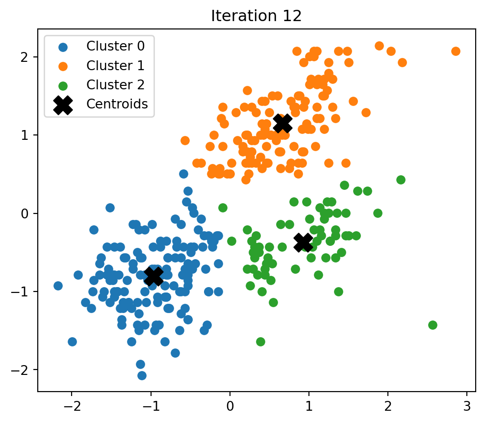
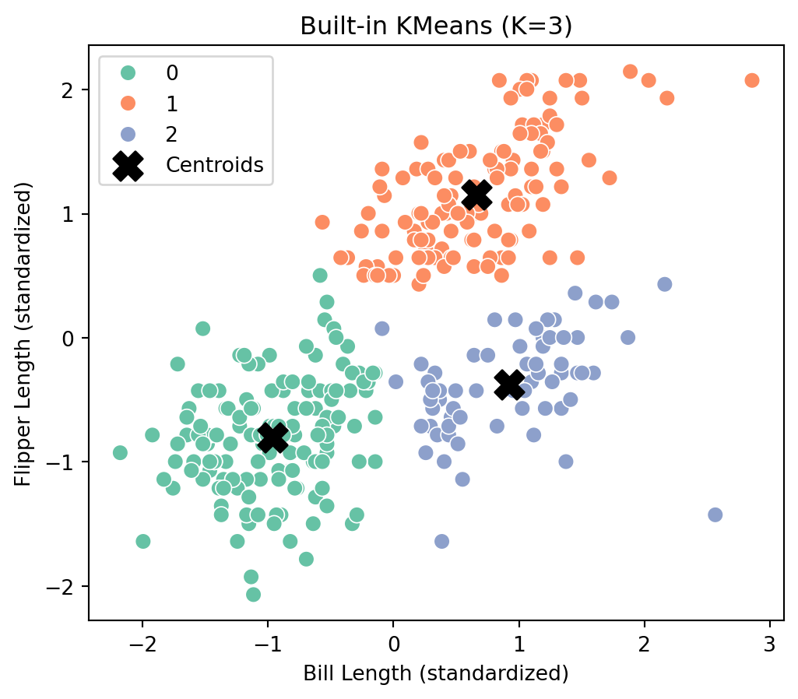
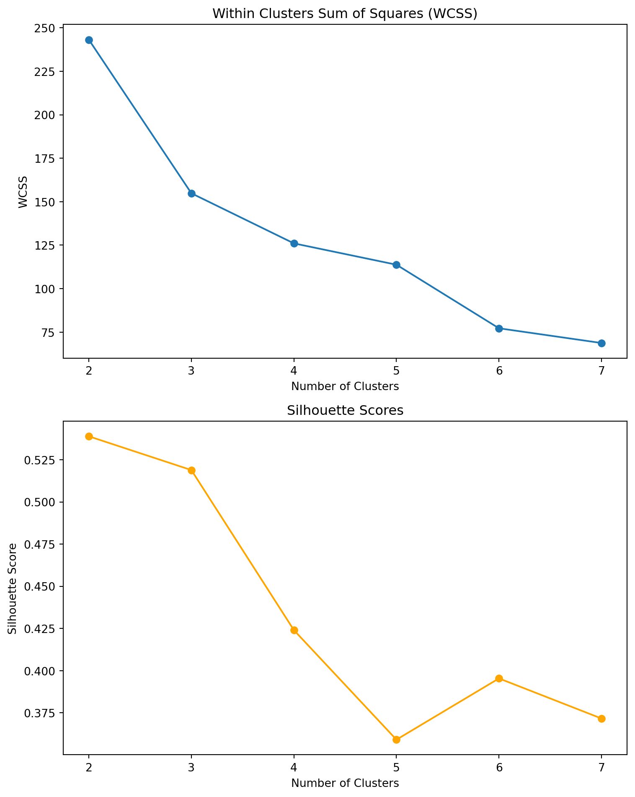
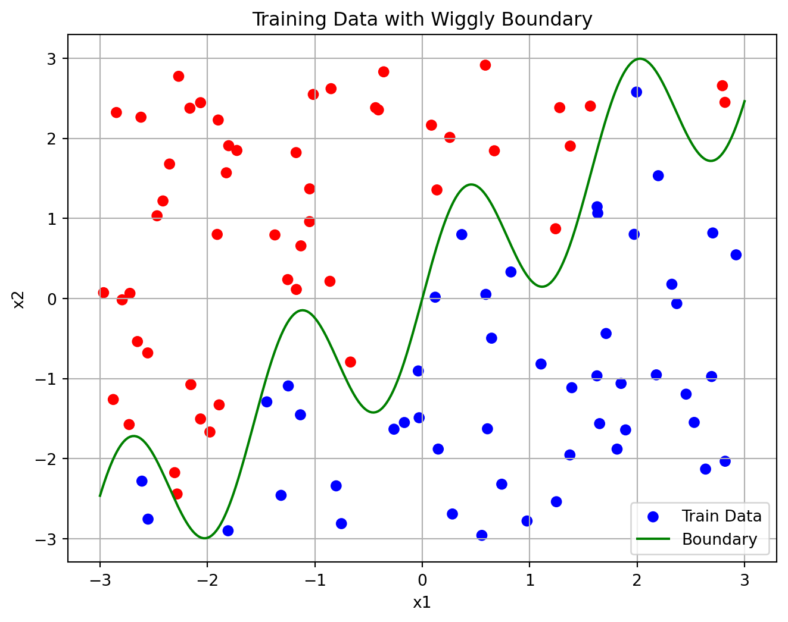
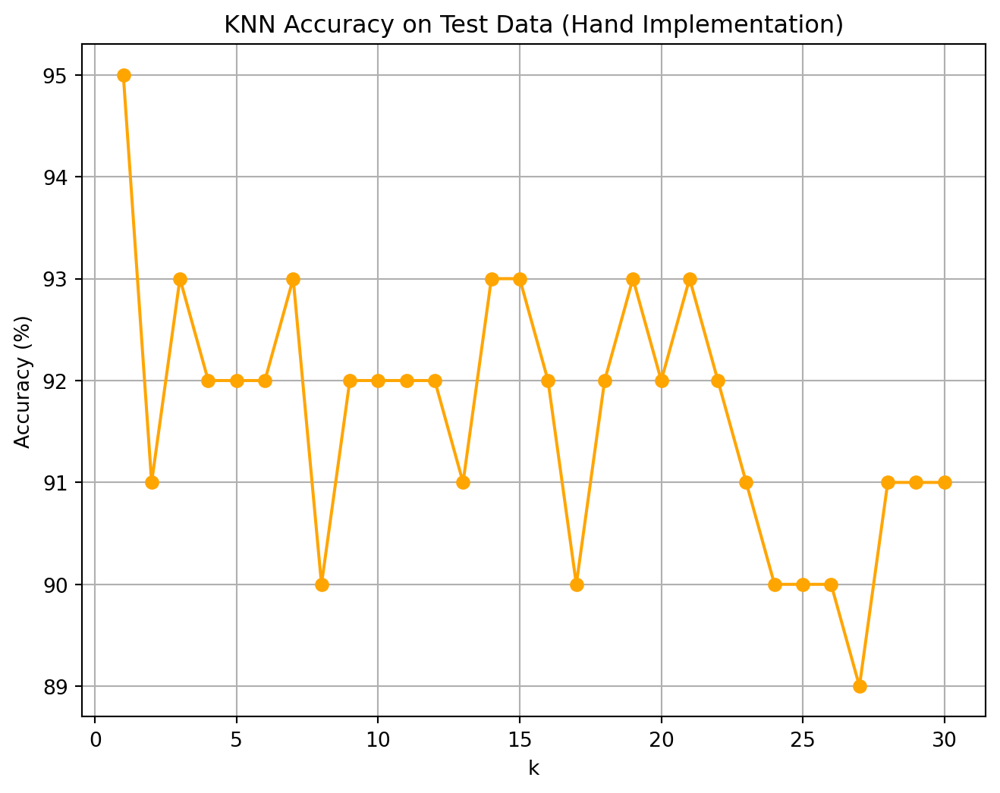
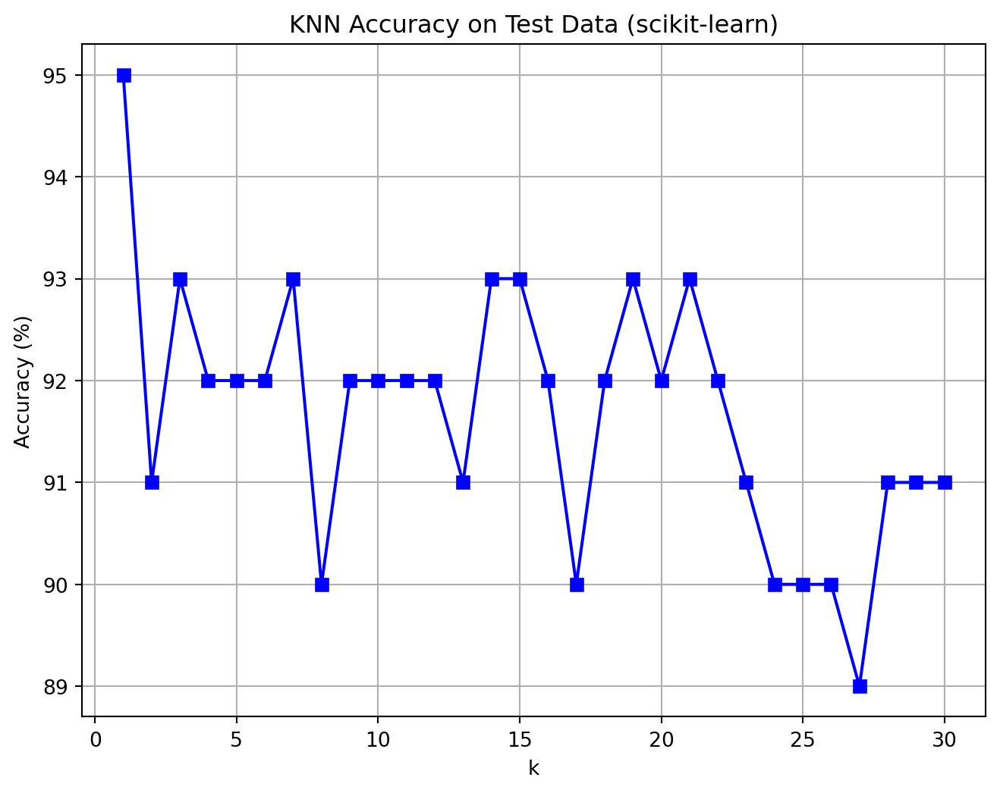

import numpy as np
import pandas as pd
df_penguins = pd.read_csv('palmer_penguins.csv')K-Means & K Nearest Neighbors
The following page presents my work for parts 1a and 2a.
1a. K-Means
todo: write your own code to implement the k-means algorithm. Make plots of the various steps the algorithm takes so you can “see” the algorithm working. Test your algorithm on the Palmer Penguins dataset, specifically using the bill length and flipper length variables. Compare your results to the built-in kmeans function in R or Python.
todo: Calculate both the within-cluster-sum-of-squares and silhouette scores (you can use built-in functions to do so) and plot the results for various numbers of clusters (ie, K=2,3,…,7). What is the “right” number of clusters as suggested by these two metrics?
We load, clean, and normalize the data:
import matplotlib.pyplot as plt
import seaborn as sns
from sklearn.metrics import silhouette_score
from sklearn.cluster import KMeans as SklearnKMeans
from sklearn.metrics import accuracy_score
from sklearn.neighbors import KNeighborsClassifier
df_penguins = df_penguins[['bill_length_mm', 'flipper_length_mm']].dropna()
X = df_penguins.values
X = (X - X.mean(axis=0)) / X.std(axis=0)Custom KMeans implementation:
def initialize_centroids(X, k):
np.random.seed(42)
random_indices = np.random.permutation(X.shape[0])[:k]
return X[random_indices]
def assign_clusters(X, centroids):
distances = np.linalg.norm(X[:, np.newaxis] - centroids, axis=2)
return np.argmin(distances, axis=1)
def update_centroids(X, labels, k):
return np.array([X[labels == i].mean(axis=0) for i in range(k)])
def compute_wcss(X, labels, centroids):
return sum(np.sum((X[labels == i] - centroids[i]) ** 2) for i in range(len(centroids)))
def custom_kmeans(X, k, max_iters=100, plot_steps=False):
centroids = initialize_centroids(X, k)
for i in range(max_iters):
old_centroids = centroids
labels = assign_clusters(X, centroids)
centroids = update_centroids(X, labels, k)
if plot_steps:
plt.figure(figsize=(6, 5))
for cluster in range(k):
plt.scatter(*X[labels == cluster].T, label=f'Cluster {cluster}')
plt.scatter(*centroids.T, color='black', marker='X', s=200, label='Centroids')
plt.title(f'Iteration {i + 1}')
plt.legend()
plt.show()
if np.allclose(centroids, old_centroids):
break
return labels, centroidsWe visualize the plots of the various steps of the algorithm to see it working:
labels, centroids = custom_kmeans(X, k=3, plot_steps=True)




We compare the “manual” results from above with the built-in kmeans function in Python:
kmeans = SklearnKMeans(n_clusters=3, random_state=42)
kmeans_labels = kmeans.fit_predict(X)
centroids = kmeans.cluster_centers_
plt.figure(figsize=(6, 5))
sns.scatterplot(x=X[:, 0], y=X[:, 1], hue=kmeans_labels, palette='Set2', s=60)
plt.scatter(centroids[:, 0], centroids[:, 1], c='black', marker='X', s=200, label='Centroids')
plt.title('Built-in KMeans (K=3)')
plt.xlabel("Bill Length (standardized)")
plt.ylabel("Flipper Length (standardized)")
plt.legend()
plt.show()
We end up with the same clustering with the built-in kmeans function in Python as we do with our manual implementation.
Within-Cluster-Sum-of-Squares and Silhouette Scores
We calculate both the within-cluster-sum-of-squares and silhouette scores and plot the results for various numbers of clusters:
wcss_list = []
silhouette_list = []
k_values = range(2, 8)
for k in k_values:
labels, centroids = custom_kmeans(X, k)
wcss = compute_wcss(X, labels, centroids)
wcss_list.append(wcss)
if k > 1:
silhouette_list.append(silhouette_score(X, labels))
else:
silhouette_list.append(np.nan)
# Set up vertical subplots (2 rows, 1 column)
fig, ax = plt.subplots(2, 1, figsize=(8, 10))
# WCSS Plot
ax[0].plot(k_values, wcss_list, marker='o')
ax[0].set_title('Within Clusters Sum of Squares (WCSS)')
ax[0].set_xlabel('Number of Clusters')
ax[0].set_ylabel('WCSS')
# Silhouette Score Plot
ax[1].plot(k_values, silhouette_list, marker='o', color='orange')
ax[1].set_title('Silhouette Scores')
ax[1].set_xlabel('Number of Clusters')
ax[1].set_ylabel('Silhouette Score')
plt.tight_layout()
plt.show()
The best K is where silhouette score is highest and WCSS plot flattens out.
We look to see where the WCSS drops sharply - this is around K = 2 and K = 3 because as K increases after this, the rate of decrease slows. After K = 4, the WCSS reduction is marginal. Looking only at the WCSS plot, K = 3 is optimal as adding more clusters yields diminishing returns.
The highest silhouette score is at K = 2. K = 3 is still relatively high and acceptable, but the score drops significantly beyond that.
Therefore, the “right” number of clusters as suggested by these two metrics is K = 2 is best based on silhouette score (better cluster separation) but K = 3 provides the ability to analyze on a more granular scale. I would opt to choose K = 3 because it provides more detailed segmentation.
2a. K Nearest Neighbors
We generate a synthetic dataset for the k-nearest neighbors algorithm. The code generates a dataset with two features, x1 and x2, and a binary outcome variable y that is determined by whether x2 is above or below a wiggly boundary defined by a sin function:
import numpy as np
import pandas as pd
np.random.seed(42)
n = 100
x1 = np.random.uniform(-3, 3, n)
x2 = np.random.uniform(-3, 3, n)
boundary = np.sin(4 * x1) + x1
y = (x2 > boundary).astype(int)
dat = pd.DataFrame({'x1': x1, 'x2': x2, 'y': y})
dat['y'] = dat['y'].astype('category')We plot the data such that the horizontal axis is x1, the vertical axis is x2, and the points are colored by the value of y:
plt.figure(figsize=(8, 6))
plt.scatter(x1, x2, c=y, cmap='bwr', label='Train Data')
x1_sorted = np.linspace(-3, 3, 300)
plt.plot(x1_sorted, np.sin(4 * x1_sorted) + x1_sorted, color='green', label='Boundary')
plt.xlabel('x1')
plt.ylabel('x2')
plt.title('Training Data with Wiggly Boundary')
plt.legend()
plt.grid(True)
plt.show()
We generate a test dataset with 100 points, using the same code as above but with a different seed:
np.random.seed(123)
x1_test = np.random.uniform(-3, 3, n)
x2_test = np.random.uniform(-3, 3, n)
boundary_test = np.sin(4 * x1_test) + x1_test
y_test = (x2_test > boundary_test).astype(int)We implement KNN by hand:
def knn_predict(X_train, y_train, X_test, k):
predictions = []
for x in X_test:
distances = np.linalg.norm(X_train - x, axis=1)
nearest_indices = np.argsort(distances)[:k]
nearest_labels = y_train[nearest_indices]
majority_vote = np.bincount(nearest_labels).argmax()
predictions.append(majority_vote)
return np.array(predictions)
X_train = np.column_stack((x1, x2))
X_test = np.column_stack((x1_test, x2_test))
accuracies = []
for k in range(1, 31):
y_pred = knn_predict(X_train, y, X_test, k)
acc = accuracy_score(y_test, y_pred)
accuracies.append(acc * 100)
plt.figure(figsize=(8, 6))
plt.plot(range(1, 31), accuracies, marker='o', color='orange')
plt.xlabel('k')
plt.ylabel('Accuracy (%)')
plt.title('KNN Accuracy on Test Data (Hand Implementation)')
plt.grid(True)
plt.show()
optimal_k = np.argmax(accuracies) + 1
print(f"Optimal k (hand implementation): {optimal_k}, Accuracy: {accuracies[optimal_k - 1]:.2f}%")
Optimal k (hand implementation): 1, Accuracy: 95.00%We check our work with scikit-learn’s built-in KNeighborsClassifier function in Python:
sklearn_accuracies = []
for k in range(1, 31):
clf = KNeighborsClassifier(n_neighbors=k)
clf.fit(X_train, y)
y_pred = clf.predict(X_test)
acc = accuracy_score(y_test, y_pred)
sklearn_accuracies.append(acc * 100)
plt.figure(figsize=(8, 6))
plt.plot(range(1, 31), sklearn_accuracies, marker='s', color='blue')
plt.xlabel('k')
plt.ylabel('Accuracy (%)')
plt.title('KNN Accuracy on Test Data (scikit-learn)')
plt.grid(True)
plt.show()
We run the function for k=1,…,k=30, each time noting the percentage of correctly-classified points from the test dataset:
results_df = pd.DataFrame({
'k': list(range(1, 31)),
'Accuracy (%)': accuracies
})
print(results_df) k Accuracy (%)
0 1 95.0
1 2 91.0
2 3 93.0
3 4 92.0
4 5 92.0
5 6 92.0
6 7 93.0
7 8 90.0
8 9 92.0
9 10 92.0
10 11 92.0
11 12 92.0
12 13 91.0
13 14 93.0
14 15 93.0
15 16 92.0
16 17 90.0
17 18 92.0
18 19 93.0
19 20 92.0
20 21 93.0
21 22 92.0
22 23 91.0
23 24 90.0
24 25 90.0
25 26 90.0
26 27 89.0
27 28 91.0
28 29 91.0
29 30 91.0We plot the results, where the horizontal axis is 1-30 and the vertical axis is the percentage of correctly-classified points:
plt.figure(figsize=(8, 6))
plt.plot(range(1, 31), sklearn_accuracies, marker='s', color='blue')
plt.xlabel('k')
plt.ylabel('Accuracy (%)')
plt.title('KNN Accuracy on Test Data (scikit-learn)')
plt.grid(True)
plt.show()
optimal_k_sklearn = np.argmax(sklearn_accuracies) + 1
print(f"Optimal k (scikit-learn): {optimal_k_sklearn}, Accuracy: {sklearn_accuracies[optimal_k_sklearn - 1]:.2f}%")
Optimal k (scikit-learn): 1, Accuracy: 95.00%Therefore, the optimal value of k as suggested by your plot is k = 1.